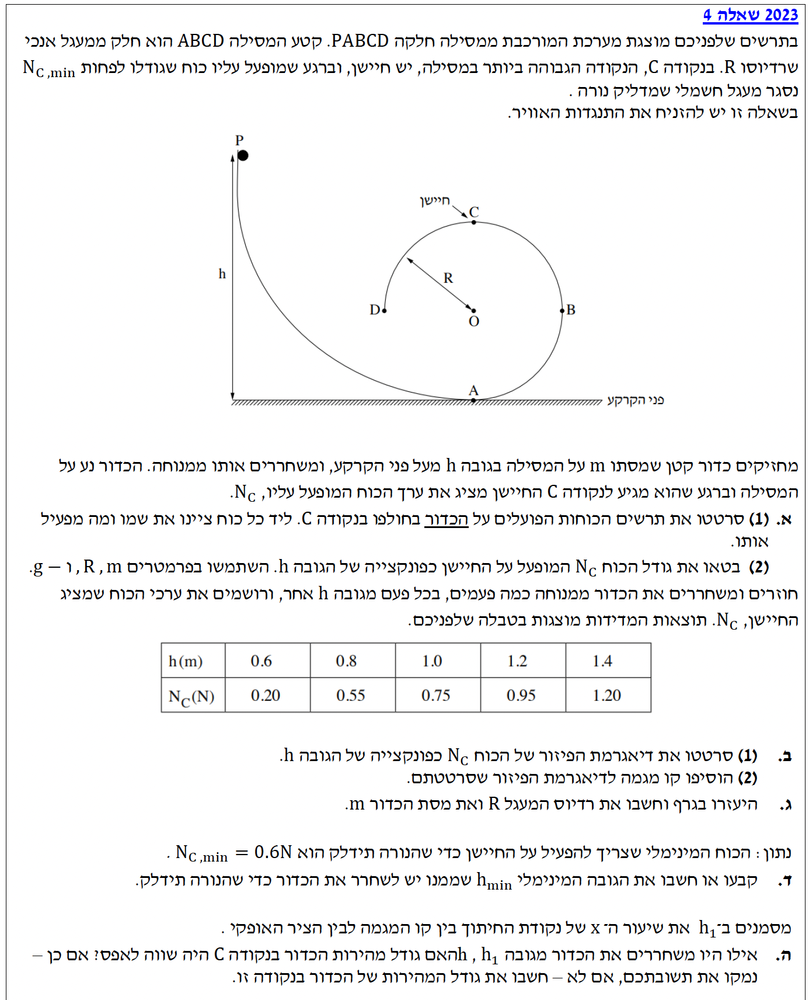

פתרון בגרות בפיזיקה
מכניקה 2023, שאלה 4
פתרון מודרך, צעד-אחר-צעד
עודכן:
--- --:--:--

[תמונת השאלה המקורית]
לא נמצאה תמונה בשם question-image.png באותה תיקייה.
מה נתון: הכדור (מסה \(m\)) חולף בנקודה \(C\), שהיא הנקודה הגבוהה ביותר במסילה המעגלית האנכית. תאוצת הכובד היא \(g = 10 \text{ m/s}^2\).
מה מחפשים: שרטוט של תרשים הכוחות (FBD) הפועלים על הכדור בנקודה \(C\), ציון שם הכוח ומי הגוף שמפעיל אותו.
נוסחאות ועקרונות בשימוש:
זיהוי כוחות מרחוק (כבידה) וכוחות מגע (נורמל מהמסילה).
פתרון צעד-אחר-צעד:
בנקודה \(C\) הפועלים על הכדור שני כוחות בלבד, שניהם כלפי מטה:
- כוח הכובד (\(mg\)): פועל כלפי מטה (לכיוון מרכז כדור הארץ). מופעל על ידי כדור הארץ.
- הכוח הנורמלי (\(N_C\)): פועל כלפי מטה (בניצב למשטח המסילה, לכיוון מרכז המעגל \(O\)). מופעל על ידי המסילה.
טיפ מורה:
טעות נפוצה היא לחשוב שהמסילה לוחצת "למעלה" בכל מצב. בנקודה העליונה של לולאה, הגוף נמצא *מתחת* למסילה, ולכן משטח המסילה דוחף את הגוף הרחק ממנה - כלומר למטה!
מה נתון: הכדור משוחרר ממנוחה מנקודה \(P\) בגובה \(h\). רדיוס המעגל הוא \(R\). המסילה חלקה ולכן אין עבודת חיכוך.
מה מחפשים: לבטא את גודל הכוח \(N_C\) כפונקציה של הגובה \(h\) (בעזרת הפרמטרים \(R, m, g\)).
נוסחאות ועקרונות בשימוש:
\( U_G = mgh \)
\( E_k = \frac{1}{2}mv^2 \)
\( \Sigma\vec{F} = m\vec{a} \)
\( a_R = \frac{v^2}{R} \)
עקרון מנחה: חוק שימור אנרגיה מכנית (הכוח הנורמלי אינו מבצע עבודה כי הוא מאונך לכיוון התנועה, ואין חיכוך).
חישוב:
שלב 1: נמצא את ריבוע המהירות של הכדור בנקודה \(C\) בעזרת שימור אנרגיה. נגדיר את מישור הייחוס לאנרגיה כובדית בקרקע (\(h=0\)). גובה הנקודה \(C\) הוא \(2R\).
\[ E_P = E_C \]
\[ mgh = mg(2R) + \frac{1}{2}mv_C^2 \]
נצמצם את המסה \(m\) ונחלץ את \(v_C^2\):
\[ gh - 2gR = \frac{1}{2}v_C^2 \]
\[ v_C^2 = 2g(h - 2R) \]
שלב 2: נרשום את משוואת החוק השני של ניוטון בציר הרדיאלי בנקודה \(C\). נבחר כיוון חיובי כלפי מטה, אל מרכז המעגל:
\[ \Sigma F_R = ma_R \]
\[ N_C + mg = m\frac{v_C^2}{R} \]
שלב 3: נציב את הביטוי שמצאנו עבור \(v_C^2\) לתוך משוואת הכוחות ונבודד את \(N_C\):
\[ N_C + mg = m \frac{2g(h - 2R)}{R} \]
\[ N_C = \frac{2mg}{R}(h - 2R) - mg \]
\[ N_C = \frac{2mg}{R}h - 4mg - mg \]
מסקנה: \( N_C(h) = \left(\frac{2mg}{R}\right)h - 5mg \)
טיפ מורה:
סידור המשוואה בצורה של \(y = Ax + B\) עוזר מאוד לסעיפים הבאים. המשתנה הבלתי תלוי שלנו (כמו \(x\)) הוא \(h\), והפונקציה (כמו \(y\)) היא \(N_C\). לכן, שיפוע הגרף התיאורטי צפוי להיות \(\frac{2mg}{R}\) ונקודת החיתוך תהיה \(-5mg\).
מה נתון: טבלת ערכים של גובה השחרור \(h\) (במטרים) לעומת הכוח הנורמלי הנמדד \(N_C\) (בניוטונים):
| \(h (m)\) |
0.6 |
0.8 |
1.0 |
1.2 |
1.4 |
| \(N_C (N)\) |
0.20 |
0.55 |
0.75 |
0.95 |
1.20 |
מה מחפשים: (1) שרטוט דיאגרמת פיזור. (2) הוספת קו מגמה לדיאגרמה.
פתרון צעד-אחר-צעד:
נשרטט את הנקודות על מערכת צירים. ציר אופקי (X) ייצג את \(h\) ביחידות מטר, וציר אנכי (Y) ייצג את \(N_C\) ביחידות ניוטון. קו המגמה יועבר כך שיהיה קרוב ככל האפשר לכל הנקודות.
טיפ מורה:
קו המגמה מעביר מיצוע (רגרסיה ליניארית) של נקודות המדידה כדי לבטל שגיאות ניסוי. לעולם אל תחברו נקודות בקו שבור ("זיגזג")! ניתן לראות שהנקודה (0.8, 0.55) מעט סוטה מהקו, וזה תקין לחלוטין בניסוי מעבדתי.
מה נתון: קו המגמה מהסעיף הקודם, והמשוואה התיאורטית שמצאנו בסעיף א(2): \( N_C = \frac{2mg}{R}h - 5mg \).
מה מחפשים: לחשב את רדיוס המעגל \(R\) ואת מסת הכדור \(m\).
נוסחאות ועקרונות בשימוש:
עקרון השוואת מקדמים בין משוואת קו ישר מתמטי \(y = Ax + B\) למשוואה הפיזיקלית.
\( A = \frac{\Delta y}{\Delta x} \)
חישוב:
תחילה, נמצא את המשוואה המתמטית של קו המגמה. נבחר שתי נקודות נוחות שנמצאות על קו המגמה ששרטטנו (ולא בהכרח מהטבלה). למשל, נראה שהקו עובר קרוב מאוד לנקודות \((1.0, 0.73)\) ולנקודה \((1.5, 1.33)\).
חישוב השיפוע (\(A\)):
\[ A = \frac{1.33 - 0.73}{1.5 - 1.0} = \frac{0.60}{0.50} = 1.2 \, \frac{\text{N}}{\text{m}} \]
מציאת נקודת החיתוך (\(B\)) על ידי הצבת אחת הנקודות במשוואה \(y = 1.2x + B\):
\[ 0.73 = 1.2 \cdot 1.0 + B \implies B = 0.73 - 1.2 = -0.47 \, \text{N} \]
כעת, נשווה למודל הפיזיקלי \(N_C(h) = \left(\frac{2mg}{R}\right)h - 5mg\) לבין משוואת הישר \(y = Ax + B\), ונקבל את הקשרים: \( A = \frac{2mg}{R} \) ו- \( B = -5mg \).
1. מציאת המסה \(m\) (בעזרת נקודת החיתוך)
\[ -5mg = -0.47 \]
\[ 5 \cdot m \cdot 10 = 0.47 \]
\[ 50m = 0.47 \implies m = \frac{0.47}{50} = 0.0094 \, \text{kg} = 9.4 \, \text{g} \]
2. מציאת הרדיוס \(R\) (בעזרת השיפוע)
\[ \frac{2mg}{R} = 1.2 \]
\[ \frac{2 \cdot 0.094}{R} = 1.2 \]
\[ R = \frac{0.188}{1.2} \approx 0.1567 \, \text{m} = 15.67 \, \text{cm} \]
מסקנה: מסת הכדור \( m = 9.4 \text{ g} \) ורדיוס המעגל \( R \approx 15.67 \text{ cm} \).
טיפ מורה - קריטי לבגרות!
תלמידים שייקחו לצורך חישוב השיפוע נקודות מהטבלה שלא נמצאות בדיוק על קו המגמה יאבדו ניקוד! מותר להשתמש בנקודות מתוך הטבלה אך ורק אם הן יושבות ממש על הקו. לכן, ההמלצה החמה והבטוחה ביותר היא תמיד לבחור שתי נקודות קריאות ישירות מתוך קו המגמה ששרטטתם.
מה נתון: כדי שהנורה תידלק, החיישן זקוק לכוח מינימלי של \( N_{C,\min} = 0.6 \text{ N} \).
מה מחפשים: קביעה מתוך הגרף או חישוב הגובה המינימלי \(h_{\min}\) שממנו יש לשחרר את הכדור.
נוסחאות ועקרונות בשימוש:
הצבת ערכים במשוואת קו המגמה (או קריאה ישירה מגרף).
חישוב:
נציב את ערך הכוח הנדרש במשוואת הקו ונחלץ את הגובה המתאים:
\[ N_{C,\min} = 1.2 \cdot h_{\min} - 0.47 \]
\[ 0.6 = 1.2 \cdot h_{\min} - 0.47 \]
\[ 1.07 = 1.2 \cdot h_{\min} \]
\[ h_{\min} = \frac{1.07}{1.2} \approx 0.892 \, \text{m} \]
מסקנה: יש לשחרר את הכדור מגובה התחלתי של לפחות \( h_{\min} \approx 0.892 \text{ m} \).
טיפ מורה:
שיטה חלופית (וקלה יותר לעיתים במבחן) היא פשוט לגשת לגרף ששרטטתם, לחפש את הערך \(y=0.6\), להעביר קו אופקי עד למפגש עם קו המגמה, ולרדת אנכית לקריאת הערך המתאים בציר ה-X. הערך הגרפי גם הוא אמור להיות קרוב מאוד ל-0.9 מטר.
מה נתון: \(h_1\) הוא ערך ה-X בנקודת החיתוך של קו המגמה עם הציר האופקי. משמעות הדבר היא שבגובה שחרור \(h_1\), הכוח הנורמלי מתאפס (\(N_C = 0\)).
מה מחפשים: האם גודל מהירות הכדור בנקודה C שווה לאפס? אם לא, חשבו את המהירות בנקודה זו.
נוסחאות ועקרונות בשימוש:
\( \Sigma\vec{F} = m\vec{a} \)
\( a_R = \frac{v^2}{R} \)
עקרון: במצב של סף ניתוק ממסילה, הכוח הנורמלי מתאפס (\(N = 0\)).
פתרון צעד-אחר-צעד:
תחילה נבדוק האם המהירות מתאפסת כשהכוח הנורמלי מתאפס. נחזור למשוואת הכוחות מהחוק השני של ניוטון עבור הנקודה C (הנקודה העליונה):
\[ N_C + mg = m\frac{v_C^2}{R} \]
נציב את התנאי נתון כי \(N_C = 0\):
\[ 0 + mg = m\frac{v_C^2}{R} \]
נצמצם במסה \(m\) ונראה כי:
\[ g = \frac{v_C^2}{R} \]
מכאן נובע בבירור כי המהירות אינה אפס! ההסבר הפיזיקלי לכך הוא שכדי להיות בתנועה מעגלית נדרשת תאוצה רדיאלית. במצב זה, כוח הכובד לבדו מספק בדיוק את התאוצה הדרושה לתנועה במעגל בנקודה זו.
כעת, נחשב את גודל המהירות:
\[ v_C^2 = gR \]
\[ v_C = \sqrt{gR} \]
נציב את הנתונים שמצאנו (\(g = 10 \text{ m/s}^2, R \approx 0.1567 \text{ m}\)):
\[ v_C = \sqrt{10 \cdot 0.1567} = \sqrt{1.567} \approx 1.25 \, \text{m/s} \]
מסקנה: המהירות אינה שווה לאפס. גודל המהירות הוא \( v_C \approx 1.25 \text{ m/s} \).
טיפ מורה - מילות קסם ומצבי סף:
בשאלות בגרות בפיזיקה, ישנן "מילות קסם" שמתארות מצב קיצון ובעצם מסתירות בתוכן נתון מספרי שלא מופיע במספרים!
ביטויים כמו "סף ניתוק" או "מהירות מינימלית להשלמת מעגל" תמיד ירמזו לנו להציב \(\boldsymbol{N=0}\) (או מתיחות אפס בחוט).
באופן דומה, ביטויים כמו "סף תנועה" או "רגע לפני החלקה" ירמזו לנו להציב חיכוך סטטי מקסימלי \(\boldsymbol{f_s = f_{s,\max}}\).
תמיד תהיו עירניים לביטויים האלה בשאלה, הם בדרך כלל המפתח העיקרי למציאת הנעלם החסר!